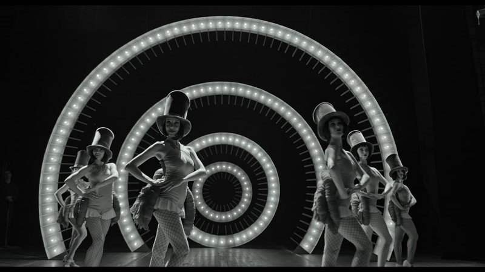

Як правильно обрати ліжко?
Художній фільм “Будинок “Слово”. Нескінчений роман”
режисера Тараса Томенка виходить в національний кінопрокат 9 травня.
Стрічка розповідає драматичну історію українських письменників “розстріляного відродження”. За наказом Сталіна 1927 року в Харкові збудовано кооперативний будинок “Слово”. Найвидатніших українських письменників заселяють у комфортні квартири.
Усі вони стали учасниками експерименту, спрямованого на виведення нового типу радянського письменника та тотальний контроль над процесом творчості з метою створення єдиного художнього методу соціалістичного реалізму. Та не кожен з письменників погоджується оспівувати Сталіна.
Неочікувано для мешканців будинку “Слово” до них підселяють нікому не відомого молодого письменника Володимира Акімова. Хто він? Ніхто не знає. З його появою в будинку “Слово” починають розгортатися дивні події, про що й досі мовчать його стіни.
Виробництво фільму здійснила компанія Fresh Production Group за підтримки Державного агентства України з питань кіно та Міжнародного благодійного фонду «Солідарність». Кінотеатральним дистриб'ютором фільму стала компанія B&H. Сценаристи стрічки – Тарас Томенко та Любов Якимчук, режисер – Тарас Томенко, оператор-постановник Михайло Любарський, художник-постановник Шевкет Сейдаметов, композиторка – Алла Загайкевич, продюсери – Юлія Чернявська, Олег Щербина, Пилип Іллєнко та Ростислав Мартинюк.
 Про Будинок “Слово”:
- Житловий будинок в Харкові по вулиці Культури, 9. Побудований наприкінці 1920-х років кооперативом літераторів. Заселений в 1930 році. Будівля має символічну форму літери "С"
- Серед мешканців будинку були Остап Вишня, Микола Хвильовий, Лесь Курбас, Валер’ян Підмогильний, Юрій Яновський.
- З 1933 по 1938 роки були репресовані понад 70 мешканців-літераторів цього будинку. 11 з них розстріляли в урочищі Сандрамох.
- 2019 року Постановою Уряду України житловий будинок «Слово» було внесено до Державного реєстру нерухомих пам'яток України.
- До початку повномасштабного вторгнення в будинку "Слово" працювала літературна резиденція.
- 7 березня 2022 року пам'ятку пошкодив російський снаряд.